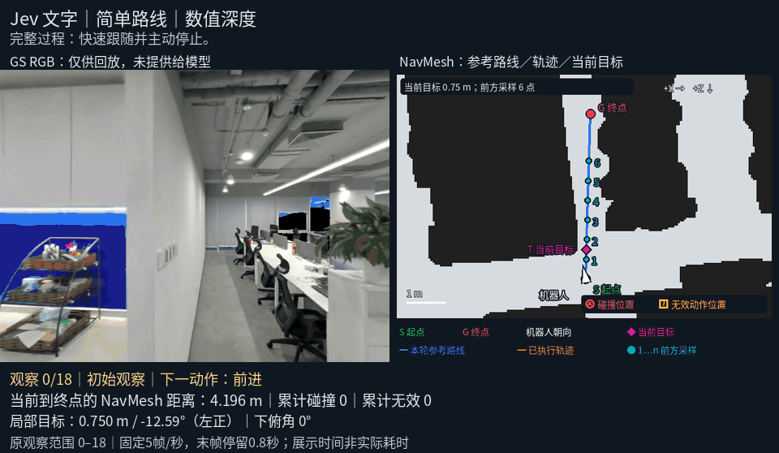
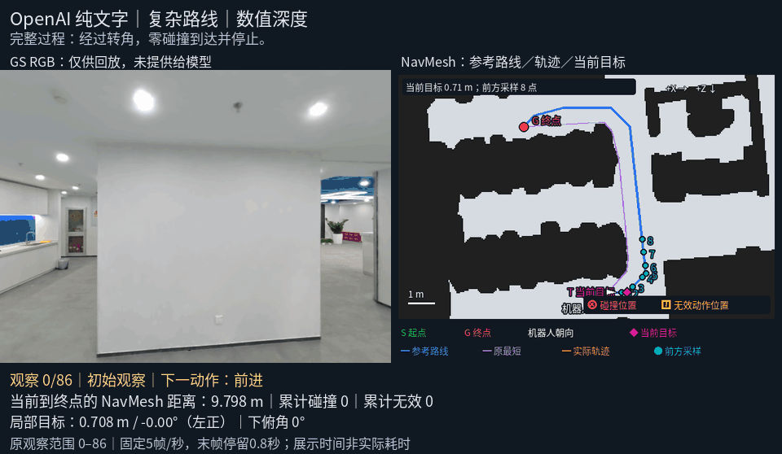
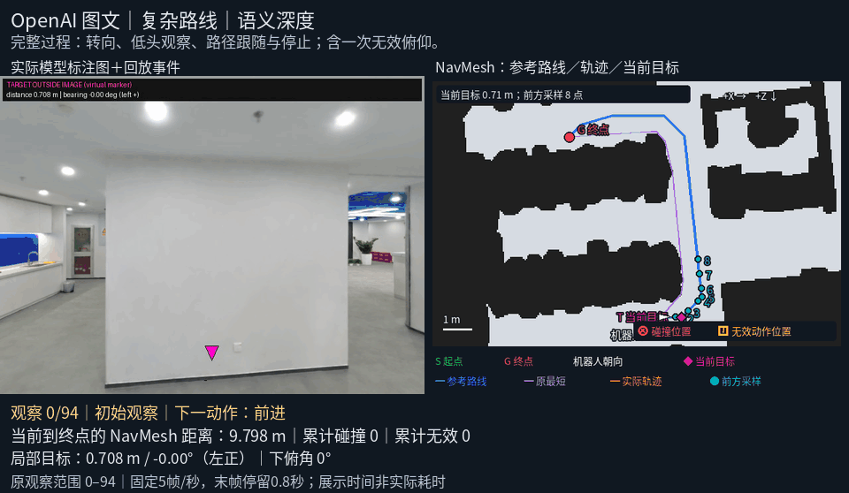
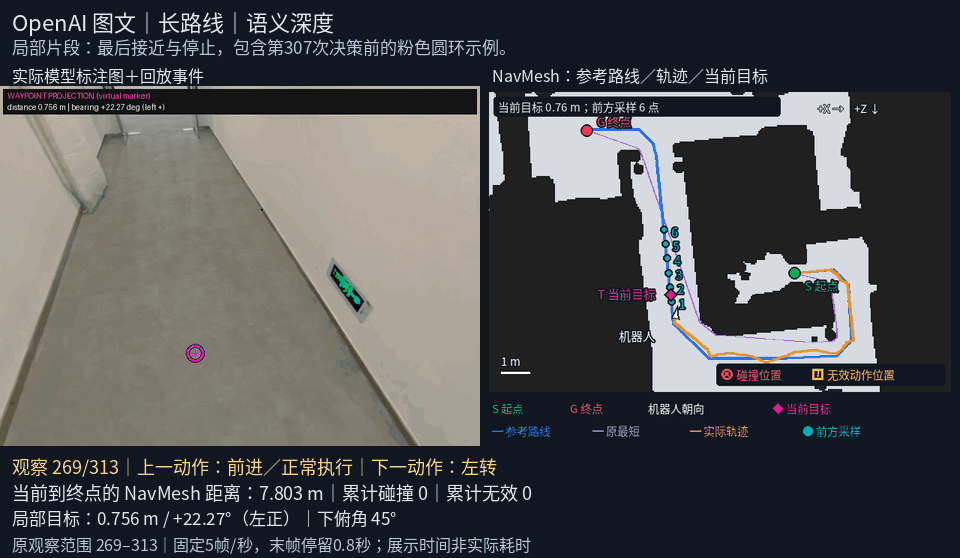
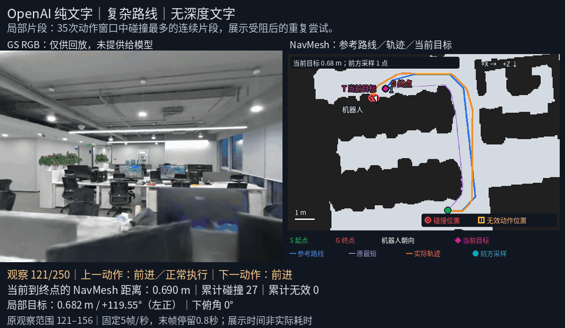
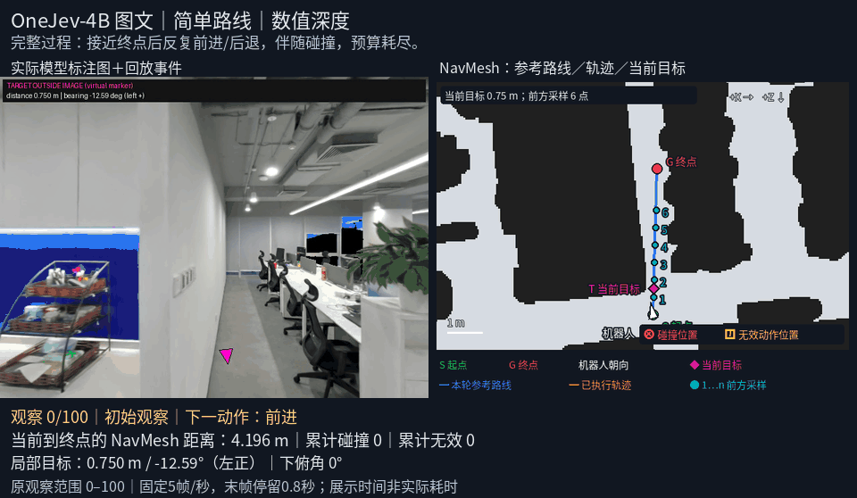
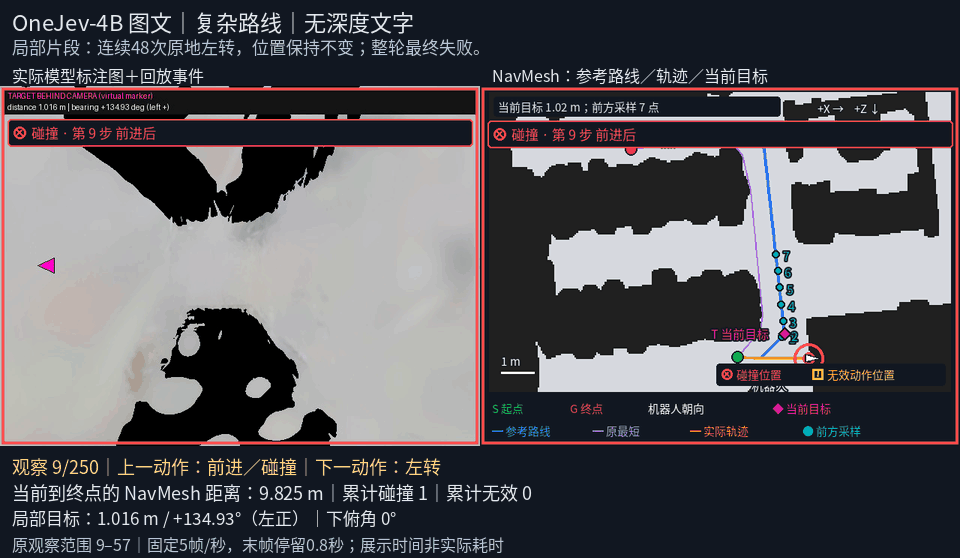
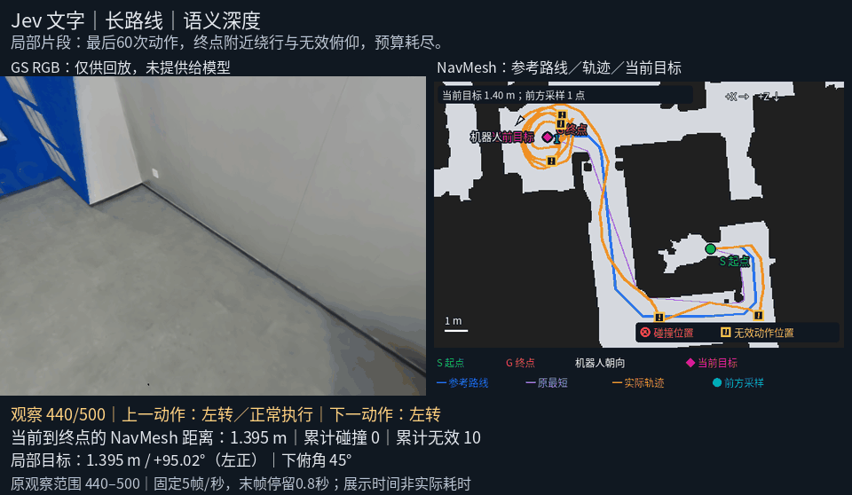

Jev 文字｜简单路线｜数值深度
完整过程：快速跟随并主动停止。
全程：观察 0–18；整轮成功；片段碰撞 0，无效 0。

固定 5 帧/秒，保留连续观察；末帧停留 0.8 秒。GIF 循环播放，不代表实验实际耗时。文字组 RGB 仅供回放，图文组为实际输入标注图加展示事件。
完整过程：快速跟随并主动停止。
全程：观察 0–18；整轮成功；片段碰撞 0，无效 0。

完整过程：经过转角，零碰撞到达并停止。
全程：观察 0–86；整轮成功；片段碰撞 0，无效 0。

完整过程：转向、低头观察、路径跟随与停止；含一次无效俯仰。
全程：观察 0–94；整轮成功；片段碰撞 0，无效 1。

局部片段：最后接近与停止，包含第307次决策前的粉色圆环示例。
局部片段：观察 269–313；整轮成功；片段碰撞 0，无效 0。

局部片段：35次动作窗口中碰撞最多的连续片段，展示受阻后的重复尝试。
局部片段：观察 121–156；整轮失败：action_budget；片段碰撞 25，无效 0。

完整过程：接近终点后反复前进/后退，伴随碰撞，预算耗尽。
全程：观察 0–100；整轮失败：action_budget；片段碰撞 19，无效 0。

局部片段：连续48次原地左转，位置保持不变；整轮最终失败。
局部片段：观察 9–57；整轮失败：action_budget；片段碰撞 0，无效 0。

局部片段：最后60次动作，终点附近绕行与无效俯仰，预算耗尽。
局部片段：观察 440–500；整轮失败：action_budget；片段碰撞 0，无效 8。
